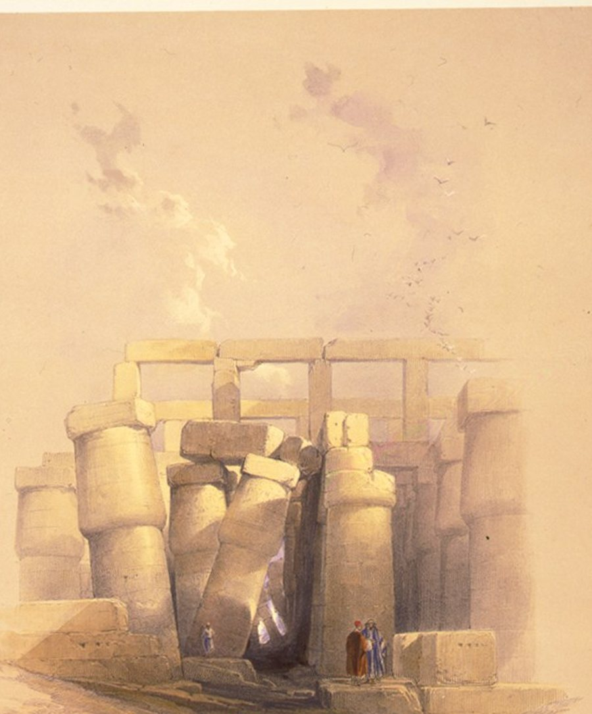

B2 · World History
Erasing a Pharaoh
Someone tried to remove Hatshepsut from the record, and the attempt is how we know she mattered.
Play the audio and follow along, then read it again on your own. Tap or hover over a highlighted word to see what it means.
At Karnak, on the east bank of the Nile at Luxor, two enormous granite obelisks were raised in the fifteenth century BC. One still stands. Around the base of it, at some point after it went up, a wall was built that hid the lower portion from view, and the inscriptions on that hidden section survived in far better condition than those left exposed. The wall was not built to protect them. It was built to conceal whose they were.

The obelisks belonged to Hatshepsut, who ruled Egypt for roughly two decades in the Eighteenth Dynasty. She began as regent for her young stepson Thutmose III after the death of her husband, which was an ordinary enough arrangement. What was not ordinary is that within a few years she was not acting as regent but reigning as pharaoh, with the full titles, and had herself depicted in the conventional royal images — including, in many of them, the ceremonial false beard that was part of the office.
Her reign was, by the evidence that survives, a successful one. It was largely peaceful. She rebuilt trade networks that had lapsed, most famously sending an expedition to a land the Egyptians called Punt, which returned with incense trees, ebony and live animals; the voyage is recorded in relief on the walls of her mortuary temple at Deir el-Bahari, which is itself among the most striking buildings to survive from the ancient world. She built extensively at Karnak. There is no sign of the instability that a disputed succession usually leaves behind.
Then, decades after her death, somebody set about removing her. Her name was chiselled out of inscriptions. Her statues were broken up and buried in a pit near her temple. Her images were replaced with those of her husband or her father or her stepson. In king lists compiled later, her reign simply does not appear, and the years are quietly attributed to others.
For a long time the explanation seemed obvious: Thutmose III, who had waited twenty years for a throne he should have inherited immediately, took revenge on his stepmother as soon as he could. It is a satisfying story and the evidence does not support it. The erasure did not begin at his accession. It began around twenty years into his sole reign, when he was an old and secure king with an unbroken record of military success behind him, and it was carried out selectively rather than furiously — public monuments were targeted, and material in places nobody would see was often left alone.
The explanation historians now generally prefer is less dramatic and more political. Thutmose III was arranging the succession of his own son, and a female pharaoh in the recent record was an awkward precedent — not a personal insult but a constitutional problem. Removing her from the public account made the line of succession look uninterrupted and male. The work was done to the record rather than to her memory, which is why it stopped where nobody was looking.
The irony is that the erasure is now the reason so much survives. The buried statues, smashed and put out of sight, were protected from the weathering and reuse that destroyed other monuments, and archaeologists excavating the pit at Deir el-Bahari in the 1920s recovered enough fragments to reassemble a number of them. The wall built to hide the obelisk base preserved the inscription behind it. An attempt to make somebody disappear turned into one of the better-documented reigns of the period.
It is a useful case for thinking about how history is actually made. What survives is not what was most important; it is what happened to last, and that is often decided by accident, or by somebody's attempt to destroy it. The gaps in the record are evidence too — a name cut out of a wall tells you that a name was there, and that somebody with resources wanted it gone.
Key Vocabulary
- obelisk a tall four-sided stone pillar narrowing to a point
- to conceal to hide something deliberately
- to reign to rule as monarch in your own right
- to depict to show someone in a picture or carving
- to lapse to fall out of use through neglect
- incense a substance burned for its scent in religious ritual
- relief a carving raised from a flat stone surface
- mortuary temple a temple built for the worship of a dead ruler
- to chisel out to cut something away from stone with a sharp tool
- to attribute to credit something to a particular person
- selectively choosing only certain cases rather than all of them
- uninterrupted continuous, with no break
- irony an outcome that is the opposite of what was intended
- weathering the wearing away of stone by wind, rain and sun
- to reassemble to put the pieces of something back together
Erasing a Pharaoh — B2 · World History · Renan the Teacher, English Language Academy · https://renangrossi.github.io/englishclasses/reading/b2/egypt.html
Interactive Exercises
Practice
Complete each exercise, then click Submit to see your score and an explanation for every answer.
Speaking & Writing
Discussion
There are no right answers here — use these to practice speaking, or write a short answer to each.
- “The gaps in the record are evidence too.” What can an absence tell you that a presence cannot?
- The revenge explanation is more satisfying than the political one. Why do we prefer stories with a motive we recognize?
- Is it possible to remove someone from history now, when so much is recorded and copied?
- The text says what survives is often decided by accident. Does that change how much confidence we should have in what we know about the past?
- Write about 250 words on someone or something that was deliberately removed from an official record in your own country's history, and what the attempt reveals.